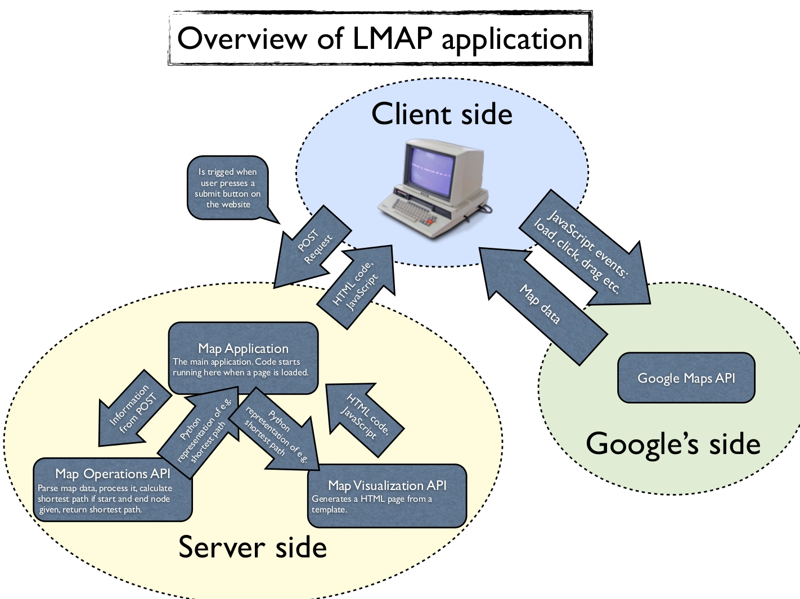

TDDD63 Project: Map-based Applications
Introduction to map based applications
Maps represent the world we live in. They are central in many computer applications. The goal of this project is to create a map-based application including some of the underlying data structures and algorithms.
As we all know, the numbering of the houses in Ryd can be quite confusing. It has been rumored that there is a research report stating that there is no simple set of rules that describe the numbering. To help you find your way to your friends you need a map application that shows the shortest path between your house and your friends houses. Since you want to become an expert programmer you decide to write your own application to learn more about the data structures, algorithms, and techniques involved in map applications.
In the first part of the project a basic web-based map application is developed which you should extended in the second part.
Background
Maps have always played a central role in human society. According to Wikipedia, a map is "a visual representation of an area -- a symbolic depiction highlighting relationships between elements of that space such as objects, regions, and themes."
The earliest known maps are of the heavens, not the earth. Dots dating to 16,500 BCE found on the walls of the Lascaux caves map out part of the night sky, including the three bright stars Vega, Deneb, and Altair, as well as the Pleiades star cluster.
Computerized maps have gained popularity especially with the introduction of smart phones with GPS receivers. Equipped with a GPS receiver you know the coordinates of your current location, i.e. you know where you are (roughly, depending on the accuracy of the receiver). To make those coordinates much more useful, you also need to know where those coordinates are in the world. In other words, you need a map. With a map displaying your location, according to the GPS, you can do many things such as finding your way to your friend somewhere in Ryd and find the closest pizza place.
There are many popular map-based applications:
- Navigation aids for smart phones and cars.
- Data visualization aids to explore and interact with data such as corruption, crimes and natural resources.
- Use crowd sourcing to monitor elections and support disaster relief, such as Crowdmap by Ushahidi.
- Recreational applications such as Geocaching, FourSquares, and MapMyRun.
- For more examples, see googlemapsmania.blogspot.se.
Google Maps is probably the most popular online map as well as map API. As Apple now have their own map application and many users, they might manage to catch up. An interesting fact about Apple's maps is that it is partially developed by the Linköping company C3 Technologies which was acquired by Apple. C3 Technologies is a spin-off company from SAAB that generates accurate 3D maps.
Overview
Below is an overview of the map application that you are going to produce. It is showing how the information is flowing in the project (when you are browsing the web-page) and what third party resources that you are going to use e.g. the Google Maps API.
It is okay to not understand it at first glance. The purpose of this chapter is to make it easier to understand how the project is going to be organised. You can look at this chapter again when you fell unsure of how to structure your code.
Almost everything you are going to code is on the server side. The application is divided in three parts.
- Map Application: The core of the application, coordinates the work using the Map Op API and the Map Vis API based on POSTed information.
- Map Operations API: Provides a set of operations on maps, such as computing the shortest path.
- Map Visualation API: Provides functionality to visualize map information, such as a shortest path.
Below an example file structure is shown. It is only an example, you may organize your files differently. Don't worry about what these files are, because you are going to create them yourself in part 3. As said before, it is useful to look back to this chapter when you need an overview of the application and when you feel uncertain about where to put your code.
| file | part | desc |
|---|---|---|
| algorithms.py | Map Op | Contains useful algorithms such as calculating the distance between two nodes. |
| road_network.py | Map Op | Stores all road information. |
| store.py | Map Op | Contains classes for storing data such as nodes and edges. |
| views.py | Map App | The "main" function, called when the page is loaded. |
| mapapp.html | Map Vis | A template that takes information and visualises it, intro to templates comes in chapter 3. |
Introductory Phase
The goal of the introductory phase is to create a web application using the Django framework, display a map using the Google Maps API and to explore map data from the Open Street Map project.
This part of the project is structured around the following four milestones that each consists of a series of exercises. Each exercise has a number of tasks that should be completed.
- Create a web application with Django
- Display a map in your web application using the Google Maps API
- Explore Open Street Map data
- Display Open Street Map data on the map in your web application
When you have completed the last milestone you will have a web application that displays data from Open Street Map on a map using the Google Maps API.
Creating a Web Application with Django
The goal of this milestone is to create a basic web application using the Django framework. Django is a Python framework for creating websites. It is very easy to get started with and provides all the functionality needed for this project.
Create a Django Project
To get started you need to create a Django project. This is done with the help of the django-admin.py program. A Django project is a Python package, i.e. a directory containing the code and the settings for an instance of Django. This includes database configurations, Django-specific options and application-specific settings.
Load the tddd63 maps module
If you are using IDA's Solaris system, then you need to load a module with Django and other software that you need for this project. The name of the module is tddd63-maps. To load it into your current terminal use the command
module add prog/django.
To automatically load the module every time you create a new terminal execute the command module initadd prog/django once. This does not load the module into any already created terminals, including the terminal where you executed the command.
If you are using your own UNIX (Linux, Mac) system then you need to install Django 1.5.x by yourself. If you are a windows user you have to find out how to set up django yourself. Check how to install it here.
Create the lmap project
The following command creates a Django project called lmap:
django-admin.py startproject lmap
Explore project files
Explore the file structure created by Django and read about what the files are here.Start a web server
To test your application you need to start a web server. Django comes with a development server which you can use. Change into the outer lmap directory, if you haven't already, and run the command python3 manage.py runserver 0.0.0.0:80XY, where X is your group number (1-6) and Y is a number that each group assigns to each student in their group (0-9). The command starts the development web server and informs you about potential problems and the URL of the server. To get the URL, find the line "Development server is running at URL".
Check that your web server is working by opening the URL in your browser.
Set up a SQLite database
To store information your application needs a database. SQLite is a simple database which is stored in a single file in the file system.
Update database configuration
To configure Django to use an SQLite database open the file lmap/settings.py, find the variable DATABASES, assign the variable 'ENGINE' the value 'django.db.backends.sqlite3', and change the value of 'NAME' to os.path.abspath(os.path.join(os.path.dirname( __file__ ), '..', 'lmap.sqlite3').replace( '\\', '/' ),. You will also need to import os, simply add import os at the top of the settings file.
What does this mysterious expression mean?
os.path.dirname( __file__ )is the directory where thesettings.pyfile is located.'..'takes you to the folder above that.'lmap.sqlite3'is the name of the file that stores the database.os.path.join(...)joins the paths togheter.os.path.abspath(...)returns the absolute path of its argument, which is the relative path created above..replace( '\\', '/' )takes the path, which is just a string, and replaces all backslashes (\) with forward slashes (/). This is needed in case you are using Windows, which uses backslashes as separators in paths, while Django (and Unix) uses forward slashes.
Read about the database configuration
Read more about the database options at docs.djangoproject.com.
Create the database and initial tables
Your Django project is by default configured to use several database tables. These must be created in the database before they can be used. To do this, execute the command python3 manage.py syncdb.
When asked about creating a superuser, say "yes". Create a superuser "admin" with your email address and the password "admin".
Create a Django app
A Django app is a Python package, somewhere in your Python path, that follows a certain convention. Django comes with a utility that automatically generates the basic directory structure of an app, so you can focus on writing code rather than creating directories. An app is a reusable Django component that can be used in multiple projects.
Projects vs. Apps
Read about the differences between a project and an app at docs.djangoproject.com.
Create the mapvis app
Change directories to the lmap directory so that you are in the directory with manage.py. To create the mapvis app, execute the command python3 manage.py startapp mapvis.
Explore app files
Explore the file structure created by Django and read about the files here.
Make your app generate a web page
The next step towards a web application is to generate your first web page. In Django, and in other frameworks based on the Model View Controller design pattern, this is done through a view. To make a page available to a user it has to be associated with a URL. From a Django programming perspective, the content of a page is produced by a view function and a URL is specified in a URLconf.
Read about views and associating URLs to views here.
Create a view displaying a message
In the mapvis app directory, there is a file views.py. This is were you should place your view functions. Enter the code below to create a view function that generates a page with the classical message "Hello world".
Read about what this code does here.
Debugging tips:
If something goes wrong you need to find out what the problem is. Often you do that by checking the values of relevant variables. This can be done in several ways. Some of the alternatives are listed below.
- Using
printis a very easy way to debug in Python. It simply prints a given value to the console. If you are running a web server it will print the output in the terminal where you started the server. - As you may already have seen, the Django error view contains a lot of information. It contains all the variables and their values. You can get this information by adding
assert(False)anywhere in your code. This will cause the program to "crash" and show all the information about the current view. Try it out in your hello world view! Addassert(False)just beforereturn HttpResponse("Hello world")and reload the page - Python also has a built-in debugger called
pdb. A debugger makes it possible to step trough the code one step at a time and see what goes on at each step. Read getting started with pdb to learn more about pdb.
Connect a URL to your view
Let us continue by associating a URL with the view function so that you can view the result in your web browser. To do this you have to edit the file lmap/urls.py. When you created the lmap project a default files was created. The important part of that file is the variable urlpatterns. If you inspect the file, you will see several examples of how to associate URLs with views.
To associate the view you created in the previous task with the relative URL "hello" you need to do two things:
-
Import the view function by adding
from mapvis.views import helloafter the existing import statement. - Create a URL pattern by adding the line
('^hello/$', hello),after
urlpatterns = patterns('',.
The file will then look something like this:
Now you can start the development web server and open the page URL/hello in your web browser. Congratulations, you have now generated a web page using Python!
If you haven't already, read about what the code does here.
Create a view that generates a page showing the current time
It is important to emphasize that the view function you just created is a plain Python function which generates a string, which is interpreted as an HTML page by your browser.
The hello view you created returns a static string. Let us make it a bit more interesting by including the current date and time. This means that every time your reload the page a new string is generated (unless you reload it faster than the resolution of the clock, but then you have to be pretty darn fast).
To achieve this you need to import datetime, get the current date and time with the function datetime.datetime.now() and then generate an HTML page in the form of a string. Why not try doing this on your own?
When you are done your code should look something like this:
Note: If you are wondering why the application are showing the wrong time, it is probaly because you haven't set up the right timezone. How to fix that you have to find out yourself, it is a good exercise.
If you still have a hard time understanding what the code snippets above do. Take some time and read through the whole Views and URLconfs from django book.
Play around with your view
If you know some HTML this would be a good time to play around with the view function and elaborate the page generated. For example, make the current time bold. You can also use your Python skills to for example display only the current time or format the date a bit nicer.
A good HTML tutorial is available here.
Generate a web page using a template
In the previous exercise you created a web page by hard coding the content. A much better approach is to use the Django template facility. It allows you to combine hard coded and generated HTML/CSS/JavaScript in more user friendly manner than creating a very long string by concatenating smaller strings.
You can read more about Django's templates here.
Create a directory for your templates
You need somewhere to store your templates. The convention is to create a directory called templates in the project directory and in it a sub directory for each application with the same name as the application.
Create a directory templates in the project directory and a directory mapvis in that directory.
Update the project configuration to find your templates
Now that you have a directory for templates you need to configure your project to find those templates. This is done by editing the file lmap/settings.py.
Find the variable TEMPLATE_DIRS in the file lmap/settings.py and add the absolute path to newly created templates directory. If you have followed the instructions, you should add os.path.abspath(os.path.join(os.path.dirname( __file__ ), '..', 'templates')).replace( '\\', '/' ), to the list TEMPLATE_DIRS.
Create a view rendering a page from the template
A template is basically a text file where some parts are interpreted as variables and macros which are expanded to generate several different instances of the text. To generate an instance of a template instantiate it with a context which is basically a Python dictionary.
Create a view called mapapp in the file views.py with the following code. The code creates a context associating the key NOW with the current date and time, instantiates the template map/mapapp.html and returns it as a response to an HTTP request.
You also need to associate a URL with the view, this is done by adding ('^mapapp/$', mapapp), to urlpatterns in the file lmap/urls.py.
Create a page template
The template itself is a text file mapapp.html in the directory templates/mapvis.
To create a page with the same content as the hello view use the following template:
A short introduction to templates
A template is basically a regular HTML page with some extra features. It can include tags which Django evaluates into HTML code.
A template contains tags and variables which the renderer evaluates into basic HTML.
- Variables: The following statement is evaluated to the value of the variable in double curly brackets
{{ foo }}When the template system encounters a dot in a variable name, e.g.
{{ foo.bar }}, it tries the following lookups, in this order:- Dictionary lookup (e.g.,
foo["bar"]) - Attribute lookup (e.g.,
foo.bar) - Method call (e.g.,
foo.bar()) - List-index lookup (e.g.,
foo[2]) if you would have written foo.2 so to say.
The system uses the first lookup type that works.
- Dictionary lookup (e.g.,
-
Tags: A tag tells the renderer to eveluate the expression, it can be for loops, if statements, or other things. For examples see the Django book ch 4.
{% for foo in bar %} ... {% endfor %}{% if foo > 10 %} ... {% endif %} -
Filters: A filter filters the content of a variable, for instance making all the characters uppercase.
{{ randomstring|upper }}
Look at the example below. A good exercise is to make a new app (python3 manage.py startapp bobbin_lace).
In bobbin_lace/views.py paste the code below.
In the folder templates create a new folder bobbin_lace and create a new file in that folder which you name memb_reg.html and paste the following code.
To be able to show the page you have to connect a url to memb_reg(). Do it by editing the file urls.py.
A few tiny tasks:
- Go to the newly created webpage (http://127.0.0.1:8000/bobbin_lace/memb_reg/).
- Right click somewhere on the webpage and chose "View Page Source". Figure out what the renderer does.
- Send the string "Hello World!" as the context from the view and print it on the web page with only uppercase characters. (psst, upper)...
This was just a short intro and you will most likely need more information on templates later on. A good source is Django book ch 4.
What happens if you open the site root?
Open the site root. What happens? Why?
Associate the mapapp view with the site root
Now you should know enough to be able to create a URL pattern that associates the mapapp view with the site root. If you need advice, read Django book ch 3.
Play around with views and templates
To learn more about views and templates we suggest that you play around with them for a while. Try to create something impressive and show it to the other groups.
Displaying a Map with the Google Maps API
The goal of this milestone is to extend the web application created to display a map using the Google Maps API. Since this API is written for JavaScript this milestone involves some very simple JavaScript programming. Most of the code needed will be provided for you. As this project shows, most applications require several different languages since each language has its own purpose and application domain.Learn more about Google Maps
Take a few minutes to read about Google Maps at developers.google.com.Learn more about the Google Maps JavaScript API
Take a few minutes to read about the Google Maps JavaScript API version 3 at developers.google.com.Get your own Google Maps API Key
To access the Google Maps API you need a key. Obtain your own key by following these instructions.Display a map
Now that you know what the Google Maps API is and have your own API key, you are ready to display your first map.Import Google Maps JavaScript code
To display a map, replace the content of the filetemplates/mapvis/mapapp.html with the following HTML, CSS and JavaScript code.
To understand what the code above does, take a look at the Google Maps JavaScript API tutorial.
Debugging tips:
To debug JavaScript you need to use some tool, otherwise you only get a white page if something goes wrong and that doesn't say too much does it?
One such tool is Firebug which is a free open source plugin for browsers. With Firebug you can see the source of the page you're visiting. It can also enable the JavaScript console to get error messages, which makes it a lot easier to find a missing "}" for instance. Firebug will also notify you about errors and warnings when you're browsing any site, if enabled.
Another way to debug JavaScript is to use alert which generates a pop-up window containing a text.
You can paste the above code anywhere you want in your JavaScript code and it will make a pop-up window appear when that statement is reached.Create a view that generates the map page
To display the map, you also need to update the mapapp view function by including your Google Maps API key in the Context so that it is included in the generated web page. The complete code for the view function is:
The Context object works like a dictionary but with some extensions. Read about Context and Templates in the documentation.
Change the map center
Currently the map is centered on Sydney, Australia. This can be changed. The latitude and longitude of Linköping University is 58.3985303, 15.5745319. To change the center of the map, update the value of the mapOptions property center to center: new google.maps.LatLng(58.3985303, 15.5745319),.
Change the zoom level
When you reload the page you see that the map is centered on Linköping. To zoom in on the university change the zoom level in the template code from 8 to 16.
Change the map type
There are several types of maps that can be displayed. The following map types are available in the Google Maps API:
-
MapTypeId.ROADMAPdisplays the default road map view, -
MapTypeId.SATELLITEdisplays Google Earth satellite images, -
MapTypeId.HYBRIDdisplays a mixture of normal and satellite views, and -
MapTypeId.TERRAINdisplays a physical map based on terrain information.
Try the different types out! In the end we suggest you use either ROADMAP or HYBRID.
Place a marker with a click on the map
You now have a web application displaying a map. To make it more interesting you will now allow a user to add markers to the map by clicking on it and displaying the latitude and longitude of that location when the mouse is over the marker.
Create a JavaScript function for displaying a marker
To display a marker you need to create a new object of the type google.maps.Marker with a reference to the map, the latitude and longitude of the marker, and the title of the marker. The title is a string that is displayed when the mouse is placed on the marker.
Copy the following helper function into your template after the line
google.maps.event.addDomListener(window, 'load', initialize);:
Create a marker on the click of the mouse
To create a marker when the user clicks the mouse on the map you need to associate a function with the event handler for the event click. When a user clicks on the map, a click event is generated which contains the latitude and longitude of the position of the click in the event attribute latLng.
The event handler is the createMarker function you created above.
To create the event handler, copy the following code to the end of the initialize() function you created before:
Test the functionality by reloading the web page and finding the coordinates of for example Zenit, your current location, and your house.
You now have a basic map application. Pretty nice, right?
Exploring Data from Open Street Map
Open Street Map (OSM) is an open source alternative to Google Maps created by volunteers, where many people, including members of Lysator, have contributed. Open Street Map contains data about for example nodes, roads and buildings. A node is a point which is of interest, usually as part of a road or a building.
The goal for this milestone is to download and explore the data in the Open Street Map project for a suitable area of Linköping.
The Linköping part of the Open Street Map project
Familiarize yourself with the Linköping part of the Open Street Map project
Linköping working group
The URL http://wiki.openstreetmap.org/wiki/WikiProject_Sweden/Linköping is the homepage of the Linköping part of the OSM project. Follow the link and investigate how this group structures their work.
A map of Linköping
The following URL http://www.openstreetmap.org/index.html?lat=58.40&lon=15.61&zoom=12 leads to a visual representation of the OSM data for the Linköping area, i.e. a map! Spend enough time exploring the map to be able to form an informed decision regarding whether the OSM data seems to be of high quality or not. In particular, it might be good to compare this map to the corresponding map area in Google Maps (hint: change the center of the map and the zoom level in your web application to the same values as above and reload your application).
Gathering map data
Download a suitable portion of the OSM data for Linköping.
Fetch OSM data from the web
Use your web browser to go to http://www.openstreetmap.org/index.html?lat=58.40&lon=15.61&zoom=12 and click on "Export" in the menu on top of the page.
Choose an area
Choose minlat="58.3773000", minlon="15.5207000", maxlat="58.4236000",
maxlon="15.6248000", and "OpenStreetMap XML-data".
Export the data
Press "Export". You will now receive a file containing roughly 11 MB of map data around which you will build your map application. Be sure to always keep an untouched version of this file backed-up somewhere and always work on a copy of this file.
A first look at the OSM data
In this exercise you will take a first look at the OSM data.
Actually look at the data
Open the OSM data file you have just downloaded in a text-editor of your choice.
XML
The data is in XML format. XML is a way to present structured data so that is is readable both by humans and machines. Read the Wikipedia page about XML to learn the basics about how this format works.
OSM XML
OSM has its own particular set of XML tags and rules for how to use them. The web page http://wiki.openstreetmap.org/wiki/OSM_XML contains specifications of the basic tags as well as links to their intended usage. Study this page. In particular, it is important that you learn how the data primitives nodes, ways, and relations are used to build the geographical information contained in a map.
Which information does a node contain?
Find out what information a node contains.
Which information does a way contain?
Find out what information a way contains.
Which information does a relation contain?
Find out what information a relation contains.
How do you represent a road using OSM XML data?
Find out how to represent a road using OSM XML data.
How do you represent a building using OSM XML data?
Find out how to represent a building using OSM XML data.
Using web tools to investigate OSM data
In this exercise you will use the web tool osmhack to investigate OSM data.
The web page http://toolserver.org/~kolossos/osm/osmhack.php?lat=58.40&lon=15.61&name=Linköping automatically generates a list of the OSM map features used in the Linköping map. Clicking a link in the "Values" column generates a map with all map elements carrying the corresponding map feature highlighted in red.
Motorways
Click "Motorway". Which major road is highlighted in red?
Roads and streets
Investigate your map data by checking which map features of roads and streets might be interesting for your application to utilize.
Campus Valla
In particular, which features do the roads, cycleways and foot paths on Campus Valla put to use?
Using Python tools to parse and investigate OSM data
We now want you to start processing the OSM data by executing programs you have written yourself. Parsing the rather extensive OSM XML format is not an easy task. You will therefore use a ready made parser for at least the introductory phase. We recommend that you use a downscaled variant of pyroute made by Oliver White, which you can find here. Open the file, chose save as and where you want to save it.
The parser we provide uses the SAX parser (Simple API for XML). The SAX parser is an API that can read a XML document. You can read more about it here.
A small example is provided in the task below to help you to understand how the parser is used.
How many nodes does your Linköping map data have?
Find out how many nodes your Linköping map data contains by writing a program that counts them and how much time it takes.
Learn more about the parser
Write Python programs to answer the following questions. To answer these questions you have to look inside the osm_parser.py file
- How many
edgesare there in your OSM data
Your own investigations
Try to come up with at least 3 questions of your own about the map data and answer them by using the osm_parser.
Displaying Open Street Map Data
Now you will put together all the pieces you have learned so far by extending the web application to display locations from Open Street Map on the map.
The goal of this milestone is to create a simple data structure for storing locations (nodes), populate the data structure with data from the Open Street Map project, and display all the nodes on the map.
Create a data structure to store locations
At the moment, all we want to do is to store all nodes with their longitudes and latitudes in memory. To do this, we represent nodes with a simple Python class holding the node id and its associated longitude and latitude:
Create a file called store.py and insert the code above there.
The data structure to store all the nodes is simply a dictionary using the node id as key and an array bounds to keep track of the boundaries of the nodes.
Using the osm_parser to parse our map data we get the following Python code:
Use the extract_osm_nodes function
Write Python code that uses the extract_osm_nodes function to read your OSM data, store it in the NodeSet class and then print out all nodes that are stored in memory.
Only use nodes in a particular rectangular area
In the map application we will need to draw all nodes in the rectangular area currently visible in the map window. This operation may have to be done multiple times, which is why we need a class holding only the nodes inside this particular rectangle. The following Python snippet creates an object holding only the nodes fitting that description:
Use the select_nodes_from_rectangle function
Write Python code to get hold of, and print out, only the nodes within the rectangular area given by
Write unit tests for the select_nodes_from_rectangle function
When you develop software it is essential to test that it does what it is supposed to do. Especially when you develop data structures and algorithms, creating good test cases is both easy and could save a lot of time. To test a single unit of a program, such as a function or a class, is called unit testing. In this exercise you will implement unit tests for the select_nodes_from_rectangle function.
Learn more about unit testing
Read the Wikipedia article on unit testing.
Create a simple unit test Using Python's unittest package
One of many advantages of Python is that it has a built-in unit testing framework called unittest. Read more about it here.
Here is an initial unit test for the select_nodes_in_rectangle function.
The code assumes that select_nodes_from_rectangle is in the file store.py, change this if necessary.
Run the unit test by executing the Python script (python3 test_select_nodes_from_rectangle.py). Make sure that your existing codes passes the three test cases.
Implement the test_all_nodes_inside test case
In the code above the test case test_all_nodes_inside is not implemented. To implement it, add the following code:
Run the updated unit test and you should get a similar error message as shown below. Why does it fail? What is wrong, the implementation of select_nodes_in_rectangle or the test case? Fix the problem and run the unit tests to make sure your code works.
Implement the test_some_nodes_inside test case
Using what you have learned so far, implement the test case test_some_nodes_inside and make sure all unit tests are passed by your code.
Add unit tests for the Node class
Now that you know how to create unit tests create one for the Node class. There should for example be tests to make sure that the latitudes and longitudes are always within their bounds. Create both hand made test cases as well as randomly generated test cases. You can read more about latitudes and longitudes here.
Run all test files with one command
To run all unit test files, cd to the folder containing all unit tests and execute the command python3 -m unittest discover. The command automatically discovers all files starting with "test" and searches them for test classes.
Extend the map application to display all locations
To display nodes from OSM as markers on the map you need to select an area, extract those nodes you would like to display, and call createMarker for each of those.
This is done in two steps, extend the view and then extend the template.
Extend the view to include a set of markers
The following code parses the file linkoping_map.osm in the same directory as the view code, extracts all nodes in a rectangle corresponding to the area between the E-house and the physics building, and adds the list of nodes to the context used to render the map.
Extend the template to display a set of markers
In the previous task you created a list of node objects and associated them with the identifier COORDS in the context. To display each of these nodes as a marker you can use the excellent Django template functionality. Basically, you can use simplified Python code to loop over a list and extract the attributes of each object. The following Django template code generates a JavaScript function to display all the nodes associated with COORDS as markers. Include the code last in the JavaScript section of the mapapp.html template.
To display the markers you also need to call the function displayMarkers(map) in the initialize() function, preferably at the end.
Main Phase: Assisting a User to Get from A to B
Congratulations, you have now learned how to create a web application displaying a map, how to extract data from the Open Street map project, store it in a data structure and display it in your web application. Equipped with this, you will now create more advanced map-based web applications.
The first step is to extend your web application to assist a user to find her way between two locations. This is the basis for direction and route finding applications such as those provided by Google and Apple.
The image below is showing how the finished product could look like, of course yours are going to be prettier.

The goal of this part of the project is to develop a web application that assists a user to get from a location A to a location B. To achieve this, the application should allow a user to select two locations on a map, compute the shortest path between these locations and display the path on the map. To compute the shortest path you also need to create a data structure storing information about which locations are connected and the distances between them as well as populate it with real map data.
This part is divided into four milestones. When you have completed them you will have a good foundation to extend the project later on.
Store The Road Data
You have already extracted the nodes from the OSM data, but to be able to find the shortest path you also have to find out what roads there are. The OSM data also contains road data and the purpose of this milestone is to extract this information.
Store an edge
Create a data structure to store roads and a set of appropriate unit tests. Make sure that your code passes all the unit tests. A suggestion is to create a data type calledEdge that stores a single edge. An edge is a directed connection between two nodes so a road would consist of many edges.
Get the data from the osm file
Populate the data structure with roads from Open Street Map. The following snippet contains a suggested way to structure the code. You will have to fill in the missing pieces of code.Store all the edges
To store all roads, we suggest that you create a new class EdgeSet which contains all edges. Between each pair of connected nodes we have to create an edge which is going to be stored in a list of edges.Shortest path
Implement a shortest path algorithm together with appropriate unit tests. Now might be a good time to try a test-driven development methodology test-driven development methodology, where you start by defining the test cases and then develop the code until it passes all the test cases. It is of course possible to start with a few initial test cases which are then extended together with the code they test.Create a mathematical graph
Create a data structure to store connections between locations and the lengths of these connections. The usual way to model interconnected locations that are a certain distance apart is by using a (combinatorial) graph. Read up on:- the mathematical concept of a graph
- typical data structures used to represent graphs.
- adjacency lists, or
- an adjacency matrix.
Implement it in Python
Implement your chosen data structure in Python and make sure you have appropriate test cases.
Populate the data structure with data from Open Street Map. To do this you will have to decide how to calculate the geographical distance between two nodes that are part of a road. Since the Earth is not flat, the distance between two points on the map cannot simply be calculated as the two dimensional Euclidean distance. One way is to use the haversine formula, as in the following Python code snippet:
Implement the shortest path algorithm
Implement a provably optimal algorithm to compute the shortest path between two locations using the graph data structure together with appropriate test cases (you do not have to prove that it is optimal). You should write your own code implementing and testing an existing algorithm, There are many algorithms for finding the shortest path between two nodes in an edge weighted graph. For this project we suggest you start out by implementing Dijkstra's algorithm.
Note on running time:
Dijkstras algorithm for an adjacency matrix is not the most optimal, for graphs that has more than 1000 nodes it becomes quite slow. Below is a table of how the running time is proportional to the number of nodes. The time complexity for Dijkstra is O(V^2) but can be improved.
| Nodes | Time (s) |
|---|---|
| 542 | 0.18 |
| 740 | 0.47 |
| 1284 | 2.74 |
| 1744 | 6.08 |
| 2694 | 25.5 |
| 3652 | 66.4 |
As you can see the algorithm starts to take a serious amount of time at around 1000 nodes. There are improvements to make e.g. using a heap instead of a matrix or create an abstract graph of only the crossings. But we leave them out for now and focus on getting a working shortest path application for a small area. In the next part of the project, you can choose to speed up the algorithm.
Display the shortest distance
Now when you have calculated the shortest distance, it would be interesting to know how long it is. Extend the map application to find and display the shortest distance between two locations.Add start and end coordinates
Extend the application to allow entering the coordinates of the start and destination by clicking on the map. To achieve this you have to do at least the following:- Create an HTML form with at least four fields, start latitude, start longitude, destination latitude and destination longitude. Read about HTML forms here.
- Create an on click event handler that fills in the fields in the form when a user clicks on the map. Since the user needs to select two coordinates you have to find a way to do that (one approach is to have a very simple state machine with two states, one for entering the start coordinate and one for entering the destination coordinate). In the introductory part you created an on click event handler so the new thing is to populate a form with that data. One page discussing this is javascript-coder.com.
-
Process the content of the form in the view. So when you press the "Go" button, you are directed to the same page. The content of the form is sent by POST and is available in Django as request.POST.
Below is some code for an object that handles POST requests. Note: all the values are defined in the initialization, when the object is first defined i.e. nothing happens with the values in the object until the "Go" button is pressed If you want any other value from a form, simply create a new variable.
Example:self.foo = get_float(request, 'id')try: ... except: ... !?
What does the try: ... except: ... statement above do? Its purpose is to test if something is possible to do, in this case convert a string to float. If it isn't possible, an exception is thrown. If you don't handle the exception the program will crash, which is pretty bad.
So how does it work? The program tries
(try:)something, if it succeds, good! else handle the exception(except:)e.g.print("Err: Conversion is not possible"). - To prevent cross site request forgery (CSRF) Django requires you to take some measures that are described here. Make sure that you follow these instructions.
User input
Since a user might click anywhere on the map, you have to implement an algorithm that finds the node in the map database closest to a given coordinate. An initial approximation can be to find the node which has the closest distance to the selected coordinate. Luckily, you have already implemented function that computes the distance between two coordinates represented as a pair of latitude and longitude. A second approximation could be to find the N closest nodes and make a somewhat smart selection among these. A third approximation is to find the closest point on the edges between the nodes (and implicitly add a node there). This is very useful if there are long road segments and the selected location is right in the middle of that segment.
As always, you should also create appropriate test cases.
Some more small extensions
- Extend the map application to display the start and destination with for example markers.
- Extend the application to show the computed distance somewhere.
Display the shortest path
It would also be good to know what path to follow if you want to take the shortest one. Extend the map application to find and display the shortest path between two locations.Get the shortest path
Extract the shortest path from the output of your shortest path algorithm. Remember to extend the unit tests by adding new test cases.Visualize the shortest path
Extend the application to display the computed shortest path on the map, the code snippet below shows how you can use the Google Maps API to draw a line on the map. Combine this knowledge with what you learned in "A short introduction to templates" in section 4.1.Show the roads on the map!
By having the structure above it becomes straight forward to create a Django template for iterating through all roads and for each road create a polyline by iterating through all coordinates and adding each coordinate to the polyline. To help you, we provide the following example JavaScript code:- The simplest approach is probably to extend the shortest path algorithm to compute the X shortest paths and display these. Does this provide good alternatives?
- A more interesting approach could be to compute the X shortest paths and then find the Y paths among these that share the fewest number of nodes.
- Can you find a better approach to compute alternative paths?
Extending Your Application Further
Smaller improvements to the shortest path application:
The application you have made so far is a bare minimum of a path finding application, below are a few things will make your application more user friendly and usable.
- Add speed to the edges and let the user ask for the fastest way rather than the shortest. Can you provide better choices by minimizing the number of crossings that the user needs to pass?
- Improve the efficiency of the application by for example adding a bounding box to the roads to filter out as many of them as possible before drawing them on the map. If you do this, then it is a good idea to measure how long it takes to create the page so that you see that you are making progress.
- Add a search box so that a user can enter an address which is looked up using the Google Geocoding API.
- Compare the shortest paths you find with the ones provided by the Google Directions API.
- Add support for buildings. This would involve at least parsing the buildings from the OSM data, storing them in your application and displaying them on the map. You could also add further information so that when the mouse is hovering over a building you display some interesting piece of information about it.
Speed improvements to the shortest path application:
As stated in section 5, using a matrix is pretty inefficient for sparse graphs. You can do some improvements to speed up the algorithm.
If you are not already using an adjacency list instead of a matrix, then change it. An adjacency list is a list where each element is representing a node and the elements in the list are the neighboors of this node. A dictionary becomes very handy since you can use the node id as key to a list conataining all neighboors to that node.

|

|
|||||||||||||||||||||||||||||||||||||||||
| Just a simple graph. | The graph is acually representing the seven bridges of Königsberg. |
|||||||||||||||||||||||||||||||||||||||||
|
|
|||||||||||||||||||||||||||||||||||||||||
| Matrix representation of the graph | List representation of the graph |
The upper image to the left is showing a simple graph. The weight of the edges are the distances between the nodes, approximatly 1, 2 and 3 units. Actually the graph is an abstraction of the bridges in Königsberg shown in the picture to the right. Below are two graphs. The one to the left is the matrix representation of the graph and the one to the right is the list representation, where every node has a list containing its neighboors as pairs (neighboor, weight).
Implement Dijkstra using a heap, which makes lookup of the min-element take constant "O(1)" instead of linear time "O(n)". An article about Dijkstra using a heap. Only consider nodes that contain a crossing. Since if a node only has one edge in to it and one from it you only have one path to choose from.
All pairs shortest path
Floyd-Warshall algorithm is an algorithm to compute every shortest path between each pair of nodes. The algorithm is really easy to implement.
Read about the algorithm and answer these questions:
Now do the following:
- What is the time complexity?
- Estimate a maximum number of nodes the algorithm can handle in a reasonable amount of time
- Extend the map application to allow a user to select a set of coordinates.
- Implement an all-pairs shortest path algorithm using the previously developed graph data structure including the API and the unit tests.
- Extend the map application to display all the paths.
You can store the precalculated paths in a database, to make the application really fast. If you want to do that, check out the extension project "Using a database" below.
Using a database
Almost all web applications in the World Wide Web uses databases. By using a database, it is possible to precalculate a lot of things by storing information from previous searches, making the searching much more efficient. Another advantage is that you as the admin of the website can look at statistics about what the users do, exactly like Google and Facebook.
Currently all the data is stored in memory and if you reload the page then all the data is loaded again. Extend the application to store all the data in a database instead. This makes the data persistent and potentially improves the efficiency of the application. This is also a good exercise since all modern web applications are database-driven. To get started we suggest that you read about Models in the Django book. Try to move as much functionality into the database as possible, for example by replacing NodeSet with a database query.
Create an application which lets users record their current or planned future location. This can be used to see where your friends were last seen and potentially where to look for them. Maybe you can connect the central schedule database to your application to show where you should be depending on what courses you take?
Extend the application by collecting information from the user. Initially it could be to only ask for the current position of the user. Maybe you are even able to get that information from the GPS on the users device?
If you have done the "all pairs shortest path" project you can use it to calculate the shortest path and store the precalculated paths in the data base.
Build a beer pipeline!
You have been given the task of building a beer pipeline by connecting plastic tubes to provide all your friends with beer directly from HG. Since you are thirsty you want to minimize the total amount of plastic tubes that you have to connect before finishing the project.
Extend the map application to allow a user to select a set of end points and then find the edges along which the pipeline should be built so that the total length of the pipeline is minimized and display the result on the map. You can make this problem easier or harder depending on how much freedom you consider to be allowed when constructing the pipeline. The simpler version is to only build the pipeline along existing roads. To make the problem harder, and the total length of the pipeline shorter, you can allow new nodes to be added. If you allow new nodes then you can start by ignoring buildings and then add these later. The more accurate you want the result to be, the more complicated it becomes.
Help a geocacher
Your friend, an enthusiastic geocacher, has heard that you are building awesome map-based applications. Since he is a bit lazy he has asked you to extend your application to allow him to select a set of geocaches and then automatically find the shortest route from his apartment visiting all the caches and then back to the apartment.In any case you can either focus on developing the necessary algorithms, the web application or some combination of them. Remember to also implement the appropriate testing to increase the quality of your code and hopefully decrease the development time. If you decide to work more on the web application rather than the underlying algorithms you may use existing code libraries such as Google's APIs or graph libraries (for example networkx, igraph).